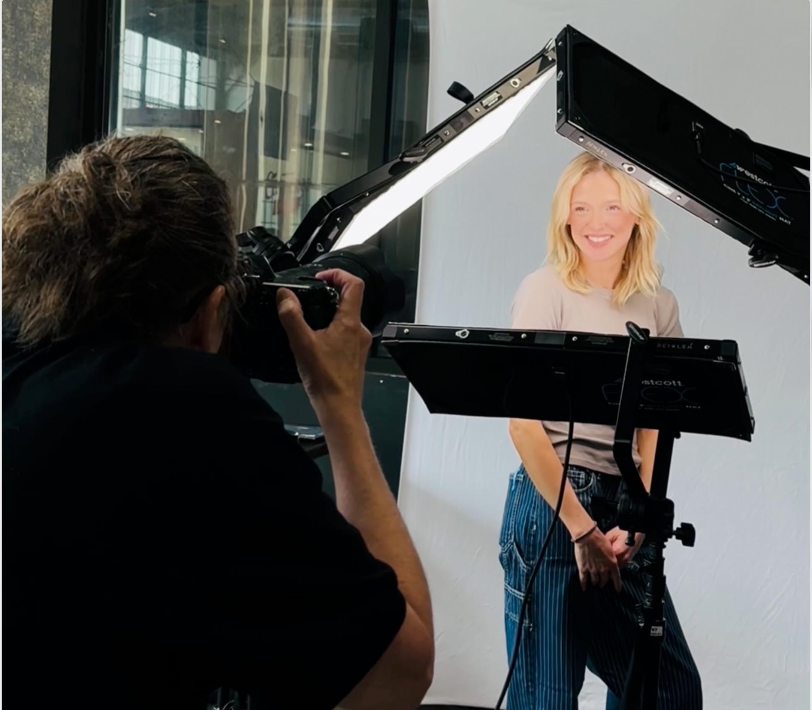

Headshot Tips & Photography Advice
Practical guidance for professionals in Cincinnati and Northern Kentucky on headshots, personal branding, pricing, and what to expect from your photography session.

I Use AI Every Day - Just Not to Replace What I Do.
The most common question I get these days has nothing to do with lighting or locations. It is whether AI is going to put me out of business. Here is my honest, maybe surprising, answer.
Read Article →
His Finger on the Shutter Button
A camera gifted to my father at 18 shaped the way he lived, learned, and loved photography for the next 65 years. This is the story of what he passed down to me, and why I still feel his steady presence every time I press the shutter.
Read Article →
How Much Do Professional Headshots Cost in Cincinnati?
2026 headshot pricing guide for Cincinnati and Northern Kentucky. See typical price ranges, what's included, corporate team pricing, and why a professional headshot is worth the investment.
Read Article →
Elevate Your Team's Image: A Guide to Corporate Team Headshot Sessions
Everything you need to know about planning, scheduling, wardrobe, on-site setup, and how to use headshots across your website and LinkedIn.
Read Article →
What to Look For in a Professional Headshot Photographer
Choosing a headshot photographer can feel overwhelming. This checklist explains exactly what to look for, including lighting, coaching, reviews, and transparent pricing.
Read Article →
How to Prepare for Your Headshots: For Men
What to wear, how to prep hair and grooming, and simple tips that help you look confident and professional. Serving Cincinnati and Northern Kentucky.
Read Article →
How to Prepare for Your Headshots: Women
A practical headshot prep guide including what to wear, makeup tips that photograph well, and hair prep advice so you look polished and professional.
Read Article →
Professional Headshot Styles by Industry: What Works for Your Profession
Different industries have different expectations. This guide explains the best headshot styles by profession, including what to wear and what impression to create.
Read Article →
Growing Through Mentorship: A Day in Cleveland
A day of mentorship, practice, and honest feedback with my friend and mentor DeMayne from Peter Hurley's Headshot Crew. The lessons that sharpened my craft.
Read Article →
Why Consistent Headshots Matter for Your Business
Consistent team headshots help your business look polished, unified, and trustworthy across your website, LinkedIn, and marketing materials.
Read Article →
Choosing the Right Background Color for Your Headshot
The background color in your headshot affects how professional, approachable, bold, or modern you appear. This guide breaks down the most common options and which fit best by profession.
Read Article →
Behind the Scenes of a Headshot Session at Deborah Heinlen Photography
Take a behind the scenes look at what happens during a headshot session — from studio setup and lighting to tethered shooting, image selection, and retouching.
Read Article →Put the Advice Into Action
Now that you know what makes a great headshot, let's create yours. Studio sessions available in Hebron, KY with on-site options throughout Cincinnati and Northern Kentucky.